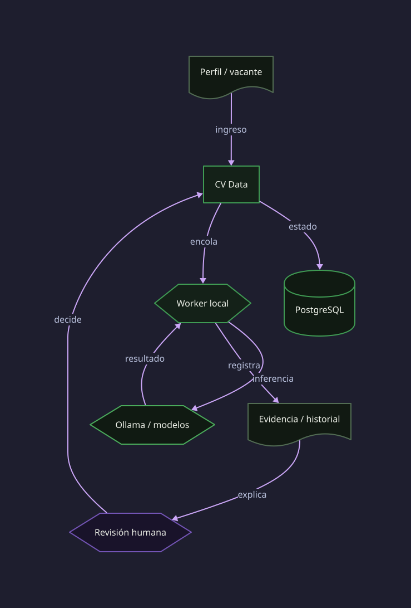
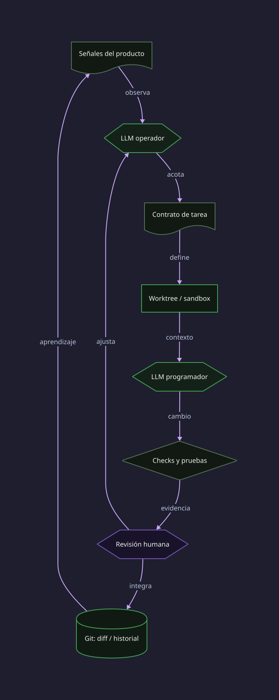

Analítica y pipelines
SQL, Python, BigQuery, Airflow, ETL/ELT, validación, reporting, costo y observabilidad.
Santiago, Chile · disponible para conversar
Trabajo entre datos, software e infraestructura porque me interesa comprender los sistemas a fondo. Me muevo entre disciplinas, estudio el detalle y busco conexiones que no son evidentes a primera vista. Cuando un proceso se entiende en su contexto, se puede mejorar con criterio: adaptar ideas de un campo a otro, decidir con conocimiento de causa y optimizar sin perder de vista el conjunto.
Experiencia profesional
Mi experiencia une desarrollo, operación y análisis. El detalle se mantiene funcional: suficiente para explicar el tipo de problemas que resuelvo, sin revelar información interna.
Diseño y operación de pipelines ETL/ELT y procesos de datos operacionales en Google Cloud.
Operación de plataformas de datos y servicios internos en Linux para performance de red.
Administración y evolución de una plataforma de gestión de servicios.
Capacidades
SQL, Python, BigQuery, Airflow, ETL/ELT, validación, reporting, costo y observabilidad.
Linux, Docker, APIs, bases de datos, virtualización, automatización y recuperación.
Modelos locales, herramientas, MCP, agentes y evaluación sin confundir exploración con producción.
Casos y práctica
El stack importa cuando está al servicio de una situación concreta. Estos casos describen tipos de trabajo; los contextos corporativos se resumen por confidencialidad.
Producto local para ingresar perfiles y vacantes, extraer información desde PDF, validar evidencia, ejecutar compatibilidades y seguir postulaciones. El modelo asiste; la decisión y la revisión permanecen en personas.
Integración de fuentes operacionales, reglas de validación y modelos analíticos para que una diferencia entre sistemas se pueda investigar, no solo esconder en un dashboard.
Linux, jobs batch, logs, bases de datos y APIs. La continuidad depende de observar, documentar, respaldar y entender las restricciones del sistema.
Proyectos y trabajo con ESP32, Arduino, telemetría y comunicación de sensores. Una lección directa: los datos útiles tienen una cadena física y técnica detrás.
Laboratorio activo
Un homelab para explorar modelos locales, agentes, herramientas y servicios. Es experimentación técnica: no una plataforma comercial ni una promesa de autonomía sin supervisión.
CV DATA · RUNTIME LOCAL Y REVISABLE

Ollama, familias Qwen y Gemma, cuantización, contexto, latencia y límites de hardware local.
Instrucciones, estado, permisos, MCP, acciones verificables y control humano en el bucle.
Sandboxing, Linux, contenedores, acceso remoto, secretos, respaldos y recuperación: las partes que una demo suele omitir.
INFRAESTRUCTURA PROPIA · PRÁCTICA ACTIVA
Trabajo de forma intensa con equipos locales, Linux, virtualización y contenedores porque ahí puedo probar una idea completa: desde el modelo, el servicio y la red, hasta el cliente que lo usa. No es una colección de hardware; es un entorno para operar, romper, recuperar y volver a diseñar.
VMs, Proxmox, Docker, almacenamiento, redes segmentadas, respaldos y servicios que puedo observar y reconstruir.
Codex y otros harnesses de programación —incluyendo pruebas con Picode y DeepSeek— para comparar flujos de agentes, permisos, revisión y trabajo sobre repositorios reales.
HTML, CSS y JavaScript para interfaces cuidadas; Django/DRF para aplicaciones. También he explorado Three.js para llevar datos y objetos a visualización 3D web.
MEJORA CONTINUA · EN DESARROLLO
Estoy desarrollando un loop de ingeniería para CV Data: un agente operador interpreta señales del sistema y convierte una necesidad en una tarea acotada; un agente programador propone el cambio en el repositorio. El ciclo termina en verificación y aprobación humana, no en despliegue autónomo.
Gemma 4 asiste extracción y traducción; Tev1 local explora clasificación y evaluación estructurada. Las inferencias se registran con su configuración y no se presentan como probabilidades calibradas.

Inventario técnico
ETL/ELT, procedimientos, modelos analíticos, particionamiento, validación, calidad de datos y reportería.
Cloud Run, Functions, Storage, servicios, virtualización, infraestructura reproducible y operación. Preparación activa para Google Cloud Professional Cloud Architect (PCA).
Automatización, modelos relacionales, APIs, integración de sistemas y herramientas internas.
Servicios, logs, monitoreo, respaldos, redes, cargas de datos y continuidad operacional.
Contacto
Datos, plataformas, automatización, IA aplicada o problemas de otra industria: cuando cambian los ángulos, aparecen mejores preguntas.